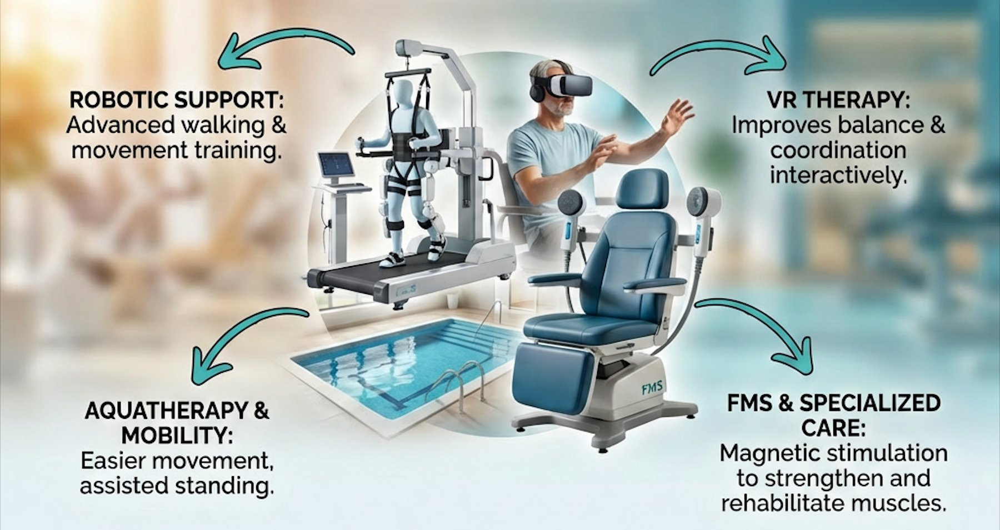
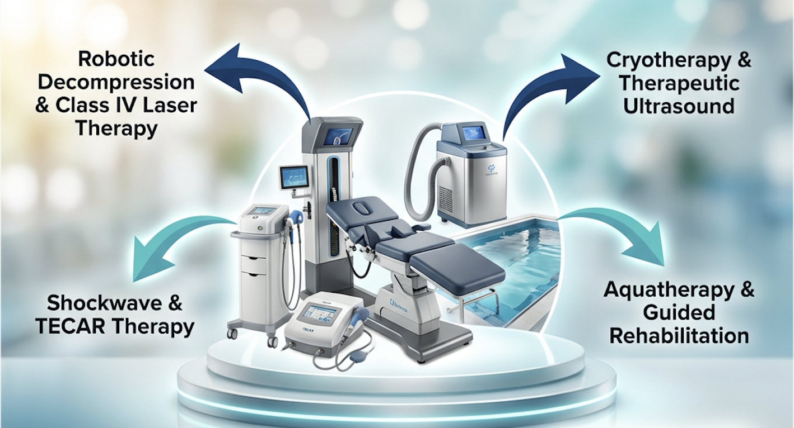
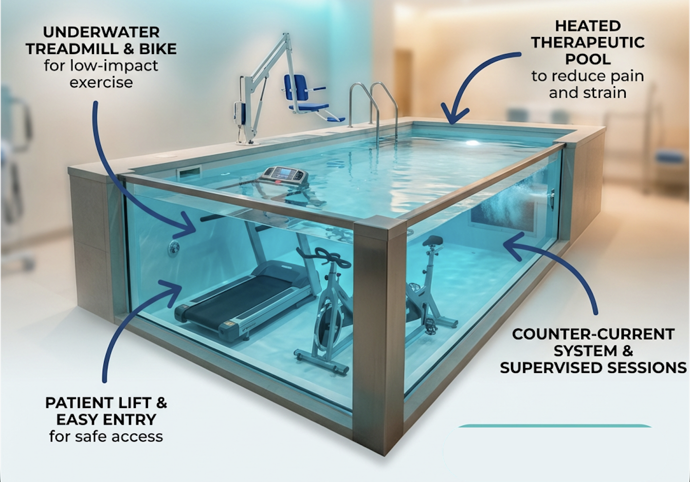
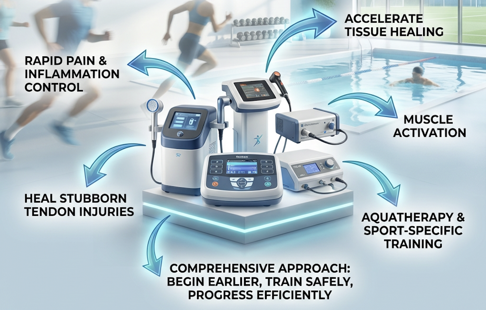

Neuro Rehabilitation
Advanced neurological rehabilitation combining robotics, virtual reality, and aquatherapy to accelerate recovery.
- Stroke (paralysis, weakness, speech & balance issues)
- Spinal cord injury (paralysis, walking difficulty)
- Traumatic brain injury (head injury recovery)
- Parkinson's disease
- Multiple sclerosis
- Cerebral palsy
- Bell's Palsy
- Peripheral nerve injuries
- Neuropathies (including diabetic neuropathy)
- Guillain-Barré syndrome
- Motor neuron disease (ALS)
- Muscular dystrophy and myopathies
- Polyneuropathy
- Brain tumor or neurosurgery recovery
- Spinal surgery recovery
- Transverse myelitis
- Functional neurological disorders
- Ataxia and coordination disorders
- Difficulty walking or standing
- Balance disorders and frequent falls
- Tremors and movement disorders
- Postural instability
- Severe weakness or loss of coordination
- Developmental delay
- Dyspraxia
- Pediatric movement disorders
- Dementia-related mobility decline
- Age-related neurological weakness
- Neurogenic bladder and bowel dysfunction
- Loss of independence in daily activities

Brain Relearning
Intensive, repetitive training helps the brain rebuild neural pathways through neuroplasticity — the key to neurological recovery
Earlier Mobilisation
Robotic support enables walking and standing training even for patients who cannot move independently — no more waiting
Pain-Free Practice
Water therapy and VR create safe, engaging environments where patients move without fear of falling or joint stress
Faster Independence
Combined technologies increase therapy intensity, improving walking, hand use, balance, and daily activity function significantly faster
Orthopaedic Rehabilitation
Non-surgical pain relief and healing using laser, shockwave, cryotherapy, and robotic decompression systems.
- Slip disc / herniated disc
- Sciatica
- Chronic back pain / Lumbar Spondylosis
- Neck pain and cervical spondylosis
- Postural problems
- Spinal degeneration
- Post-spine surgery rehabilitation
- Knee pain and osteoarthritis
- Hip pain and arthritis
- Shoulder pain and impingement
- Frozen shoulder
- Elbow pain (tennis elbow, golfer's elbow)
- Wrist and hand pain
- Heel Pain
- Knee replacement rehab
- Hip replacement rehab
- Shoulder surgery rehab
- Ligament reconstruction rehab
- Fracture fixation recovery
- Post-fracture stiffness and weakness
- Joint stiffness after immobilization
- Loss of movement after injury
- Arthritis and joint degeneration
- Age-related joint pain
- Fibromyalgia
- Long-standing musculoskeletal pain
- Difficulty walking or climbing stairs
- Reduced strength and mobility
- Workplace or posture-related pain
- Obesity-related joint stress

Non-Surgical Pain Relief
Advanced technologies target the root cause of pain — not just the symptoms — reducing reliance on medication and avoiding surgery
Deeper Healing
Laser, TECAR, and shockwave penetrate deep tissues where basic physiotherapy cannot reach, stimulating repair at the cellular level
Joint Decompression
Robotic systems precisely reduce pressure on discs and nerves, often improving mobility and reducing radiating pain from the first session
Faster Functional Return
Combining pain-relief tech with structured strengthening and aquatherapy gets patients back to walking, climbing stairs, and daily life faster
Aquatherapy
Rajasthan's first purpose-built aquatherapy facility — a temperature-controlled therapeutic pool designed for clinical rehabilitation.
- Slip disc / Herniated disc
- Sciatica
- Chronic back and neck pain
- Osteoarthritis
- Rheumatoid arthritis
- Ankylosing spondylitis
- Avascular necrosis (AVN)
- Fibromyalgia
- Joint stiffness and mobility loss
- Post-fracture stiffness
- Post joint-replacement rehabilitation
- Stroke and hemiparesis
- Spinal cord injury
- Multiple sclerosis
- Traumatic brain injury
- Parkinson's disease
- Guillain-Barré syndrome (recovery phase)
- Peripheral neuropathy
- Gait ataxia and walking disorders
- Balance disorders
- ACL rehabilitation
- Knee ligament injuries
- Ankle instability
- Muscle injuries
- Stress injuries
- Post-surgical sports recovery
- Age-related weakness
- Joint pain in elderly
- Difficulty walking
- Fear of falling
- Balance problems
- Obesity-related joint pain
- Weight loss programs
- Fitness for individuals unable to exercise on land
- Cerebral palsy
- Autism spectrum disorder
- ADHD

Move Without Pain
Buoyancy reduces joint stress by up to 80%, allowing patients to exercise freely — even those who cannot stand or walk on land
Warm Water Healing
Therapeutic warmth relaxes muscles, boosts circulation, and naturally reduces pain — making each session more effective than land therapy
Natural Strengthening
Water resistance builds muscle safely without overloading joints — patients control their own effort by varying movement speed
Confidence & Recovery
The supportive environment reduces fall risk and fear, helping patients recover mobility, balance, and endurance significantly faster
Sports Rehabilitation
Advanced sports recovery combining cryotherapy, laser, shockwave, and sport-specific performance training.
- ACL rehabilitation
- PCL and other knee ligament injuries
- Meniscus injuries
- Runner's knee
- Post knee surgery recovery
- Ankle sprain and instability
- Achilles tendon injuries
- Plantar fasciitis
- Stress injuries
- Rotator cuff injuries
- Shoulder instability and dislocations
- Tennis elbow and golfer's elbow
- Wrist and hand injuries
- Muscle strains and tears
- Hamstring injuries
- Groin injuries
- Tendinitis and overuse injuries
- Loss of strength and conditioning after injury
- Reduced agility and speed
- Movement imbalances
- Re-injury prevention

Control Inflammation Fast
Cryotherapy and laser work immediately to reduce swelling and pain — allowing rehabilitation to begin days earlier than traditional approaches
Deep Tissue Repair
Shockwave, TECAR, and high-intensity laser promote healing deep inside tendons and ligaments where the body struggles to heal alone
Rebuild Performance
Sport-specific strength, agility, and functional training progressively restore power, speed, and confidence for competitive return
Return Stronger
The combination of advanced recovery tech and structured performance training helps athletes come back faster — and often stronger than before
Pelvic Health & Incontinence
Non-invasive pelvic rehabilitation with magnetic stimulation technology for men and women.
- Urinary incontinence (leakage)
- Urgency and frequent urination
- Neurogenic bladder
- Loss of bladder control after surgery
- Fecal incontinence
- Postpartum pelvic weakness
- Pelvic organ prolapse (mild to moderate)
- Pelvic pain
- Pain during intercourse
- Recovery after gynecological surgery
- Erectile dysfunction (ED)
- Post-prostate surgery incontinence
- Pelvic pain in men
- Bladder dysfunction after stroke or spinal injury
- Pelvic floor weakness due to aging
- Chronic pelvic muscle tightness

Muscles You Cannot Reach
Pelvic floor muscles are deep and difficult to activate voluntarily — magnetic stimulation does it automatically, helping where exercises alone often fail
Non-Invasive & Comfortable
The ISKRA chair works through clothing with no preparation needed — making treatment accessible, dignified, and easy to commit to
Restores Control
Combined magnetic and electrical stimulation retrains nerve-muscle coordination, significantly improving bladder control and sexual function
Lasting Results
When combined with guided therapy and lifestyle changes, patients experience faster improvement, greater confidence, and long-term relief without surgery
Geriatric Rehabilitation
Gentle yet effective therapy to reduce pain, improve mobility, and restore independence in older adults.
- Knee osteoarthritis
- Hip arthritis
- Chronic back and neck pain
- Degenerative spine conditions
- Joint stiffness and reduced mobility
- Difficulty walking
- Unsteady gait
- Frequent falls or fear of falling
- Weakness due to inactivity
- Postural instability
- Knee replacement rehabilitation
- Hip replacement rehabilitation
- Fracture recovery
- Post-hospitalization weakness
- Stroke recovery
- Parkinson's disease
- Peripheral neuropathy
- Balance disorders
- Loss of independence in daily activities
- Difficulty climbing stairs
- Reduced endurance
- General frailty
- Urinary incontinence
- Age-related pelvic floor weakness

Gentle Yet Effective
Advanced pain-relief technologies control chronic discomfort, allowing seniors to participate in rehabilitation without fear or distress
Move Without Strain
Aquatherapy enables exercise with less joint stress, making strengthening possible even for patients with severe arthritis or post-surgery weakness
Prevent Falls
Balance training is the most effective defence against falls — our progressive programs build stability, coordination, and confidence together
Restore Independence
Walking, climbing stairs, dressing, and daily activities — our goal is helping elderly patients do the things that matter most to them, safely and confidently
Oncology Rehabilitation
Safe, gradual rehabilitation to restore strength and quality of life after cancer treatment.
- Weakness after chemotherapy or radiation
- Severe fatigue and reduced endurance
- Muscle loss and deconditioning
- Difficulty returning to daily activities
- Breast cancer surgery rehabilitation
- Shoulder stiffness after mastectomy
- Post abdominal or pelvic cancer surgery recovery
- Pain and movement restriction after surgery
- Arm swelling after breast cancer treatment
- Leg swelling after pelvic cancers
- Post-surgical lymphatic swelling
- Chronic lymphedema
- Cancer-related pain
- Joint stiffness and reduced movement
- Scar tissue tightness
- Postural changes
- Bladder dysfunction after prostate or pelvic cancers
- Pelvic floor weakness
- Reduced physical capacity

Manage Lymphedema
Compression therapy and bandaging control swelling, improve limb function, and prevent the progressive worsening that untreated lymphedema causes
Rebuild Safely
Every exercise program is graded to the patient's current strength — rebuilding muscle and endurance without the risk of overexertion
Reduce Fatigue
Structured exercise actually reduces cancer-related fatigue — improving energy, circulation, and the ability to participate in daily life
Restore Confidence
By addressing pain, swelling, weakness, and limited movement together, patients regain independence and quality of life after cancer treatment
Balance & Vestibular Rehabilitation
Structured balance training with specialized equipment to improve stability and walking confidence.
- Positional vertigo (BPPV)
- Chronic dizziness and lightheadedness
- Motion sensitivity
- Imbalance while walking
- Stroke-related imbalance
- Parkinson's disease balance problems
- Peripheral neuropathy causing instability
- Cerebellar and coordination disorders
- Unsteady walking
- Gait abnormalities
- Difficulty standing for long periods
- Post-surgery or post-injury imbalance
- Frequent falls or fear of falling
- Weakness-related instability
- Loss of confidence while walking

Retrain Your Balance System
Progressive challenges retrain the body's ability to sense position, shift weight, and respond to instability — the foundations of safe movement
Walk With Confidence
Surface and gait training restores natural walking patterns, step negotiation, and the ability to navigate real-world environments safely
Reduce Fall Risk
For elderly and neurological patients, fall prevention is life-changing — our programs combine strength, coordination, and confidence training
Safe Progress
Water therapy and tilt tables allow earlier balance training for severely weak patients, building capability before transitioning to land-based exercise
Cardio & Respiratory Rehabilitation
Structured programs to improve breathing efficiency, endurance, and overall physical fitness.
- Chronic breathlessness
- COPD and chronic lung disease
- Asthma-related exercise limitation
- Reduced lung capacity
- Difficulty breathing during activity
- Recovery after heart surgery or cardiac events
- Reduced stamina and fatigue
- Exercise intolerance
- Low physical endurance
- Weakness after prolonged illness
- Reduced mobility after hospitalization
- General physical deconditioning
- Difficulty clearing mucus
- Chest congestion
- Ineffective coughing
- Shortness of breath during daily activities
- Difficulty walking long distances
- Reduced ability to perform routine tasks

Breathe Better
Respiratory retraining and chest physiotherapy improve lung function, airway clearance, and breathing comfort — reducing the sensation of breathlessness
Build Stamina Safely
Monitored endurance training strengthens the heart and lungs gradually — with medical supervision ensuring every session is safe and effective
Use Oxygen Efficiently
Structured conditioning helps the body extract and use oxygen more effectively, improving energy levels and reducing fatigue during daily activities
Return to Normal Life
Walking, climbing stairs, household tasks — the goal is restoring the stamina needed for everyday activities with confidence and independence
Gynaec & Women's Health
Comprehensive women's health rehabilitation with advanced pelvic therapies and targeted exercise programs.
- Pregnancy-related back and pelvic pain
- Pelvic girdle pain
- Sciatica during pregnancy
- Postnatal weakness and deconditioning
- Urinary incontinence after childbirth
- Pelvic floor weakness
- Loss of bladder control
- Pelvic muscle dysfunction
- Diastasis recti (abdominal separation)
- Core weakness after pregnancy
- Postural instability
- Post-caesarean recovery
- Recovery after hysterectomy
- Rehabilitation after gynecological surgeries
- Scar stiffness and abdominal tightness
- Chronic pelvic pain
- Lower back pain related to pregnancy or postpartum
- Difficulty returning to daily activities

Activate Deep Muscles
Pelvic and postpartum muscles are deep and difficult to engage — magnetic stimulation and biofeedback solve this, working where traditional exercises cannot
Non-Invasive & Dignified
Our specialised equipment and biofeedback systems provide effective treatment in a comfortable, private setting — no undressing or invasive procedures needed
Rebuild Core Stability
Targeted diastasis recti repair, posture correction, and pain relief restore the structural support that pregnancy and childbirth can compromise
Complete Recovery
Addressing muscle weakness, pain, bladder control, and posture together — helping women recover fully and return to daily activities with confidence